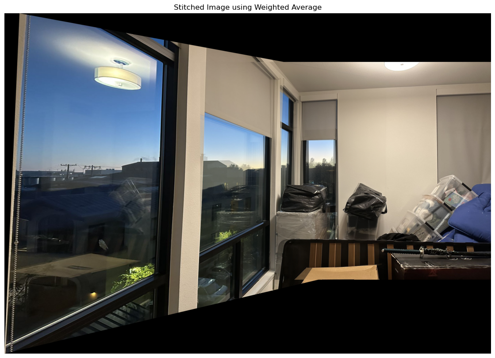
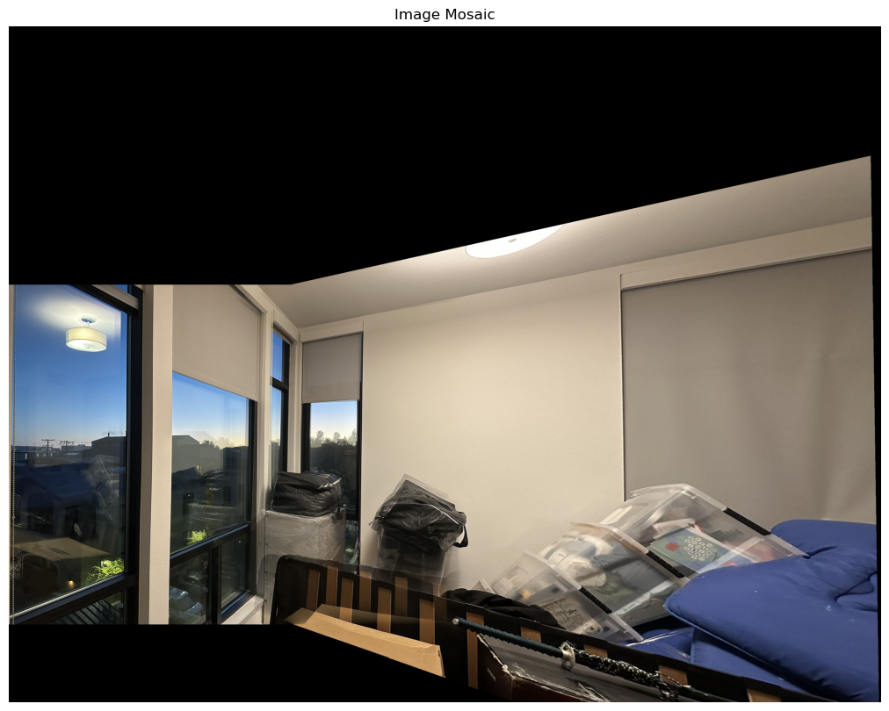
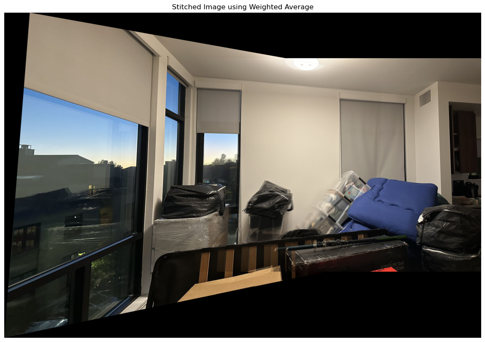
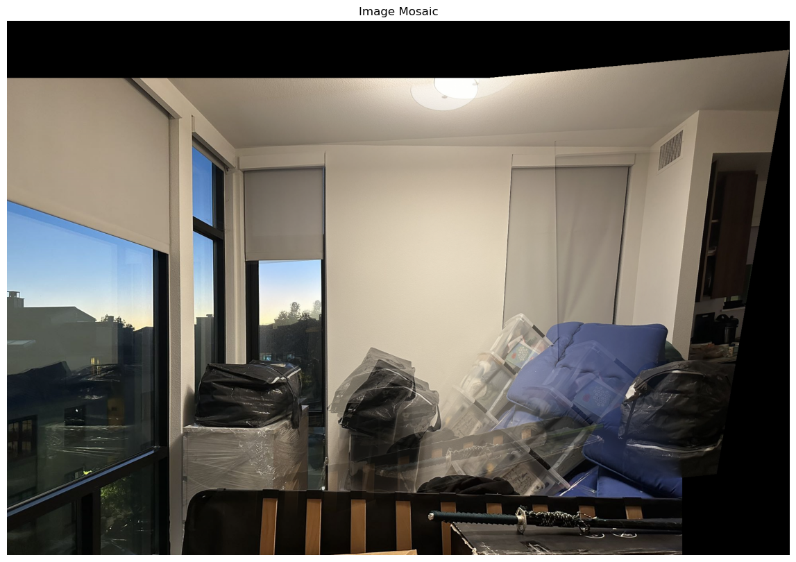
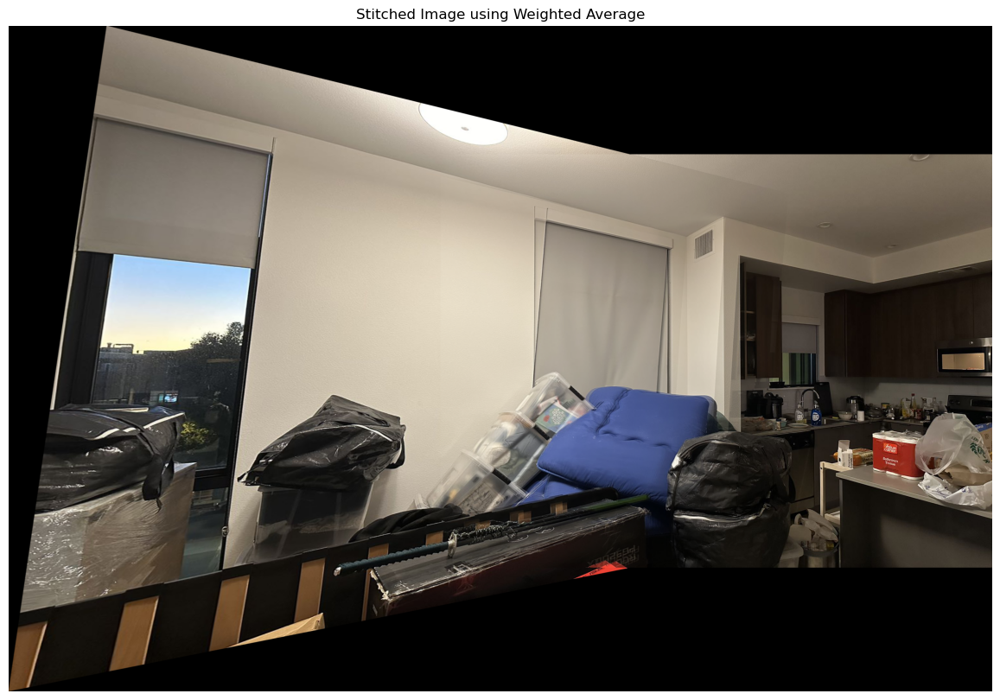

Project4b - Guanyou Li
Part 1: Harris Interest Point Detector
This code implements Harris corner detection combined with Adaptive Non-Maximal Suppression (ANMS) to enhance feature selection in images. First, the Harris detector identifies corner points across the image. Then, ANMS filters these corners, ensuring they are both strong in response and well-distributed.
I enhance Harris corner detection with Adaptive Non-Maximal Suppression to achieve high-quality, well-distributed feature points. Using the Harris method, potential corner points are identified based on their response values, which represent the likelihood of a pixel being a corner. These points are then filtered to exclude those near the image edges to avoid boundary artifacts. All detected corners are sorted by their Harris response values, keeping the strongest corners at the top. This ensures that ANMS starts with the most prominent features. For each corner point, ANMS computes a suppression radius, defined as the minimum distance to any stronger corner. This radius ensures that only the most spatially distinctive points are retained. When calculating distances, a `KDTree` structure is used to optimize the nearest-neighbor search, improving efficiency in identifying nearby points. Iterative Selection and Radius Update: As points are processed, their suppression radii are updated. Each point's radius reflects its proximity to stronger points, allowing ANMS to retain those with the highest radius. The algorithm then selects the top `n` corners with the largest suppression radii, resulting in a final set of high-quality, well-distributed feature points.
Part 2: Feature Descriptor Extraction
I use a robust feature detection and description pipeline for images. It first identifies key corner points using Harris corner detection with Adaptive Non-Maximal Suppression (ANMS) to ensure the strongest and most spatially distinct features are selected. Around each corner, it extracts small, normalized patches as feature descriptors, capturing unique image details for each point. This approach is ideal for tasks like image matching, where well-defined, distributed, and distinctive features are crucial. Additionally, the code includes visualizations to display detected corners and sample descriptors, making it easy to verify feature quality.
Part 3: Feature Matching
I started by applying Harris corner detection to locate key feature points in each image, using Adaptive Non-Maximal Suppression (ANMS) to ensure these points are both strong and well-distributed. I then extracted image patches around each corner and normalized them into feature descriptors, capturing unique local details for reliable matching. To match features between two images, I used a nearest-neighbor approach with distance and ratio thresholds, retaining only high-quality matches. This step effectively filters out noisy matches, improving matching precision. By connecting matched points across the two images, I visually inspect the accuracy of the matches, making it easy to verify that features correspond well between images. For efficiency, I included feature saving and loading functionality, allowing for reuse without recalculating descriptors.
Part 4: RANSAC for Homography Estimation
RANSAC is used to compute a robust homography matrix from the matched points. It iteratively samples small groups of matches, computes a potential homography, and checks how many matches fit this model within a threshold. Each match is projected to the second image using the computed homography, and its distance from the true position is calculated. Matches with distances below the threshold are counted as inliers. After many iterations, the homography matrix with the highest inlier count is chosen as the final transformation, effectively filtering out outliers. This RANSAC-based approach is essential for dealing with noisy or imperfect feature matches, ensuring that the homography transformation is estimated robustly and accurately.
Part 5: Mosaic Image Generation
Next is the mosaic image generated by the previous method. These four pictures are Figure 1, Figure 2, Figure 3, and Figure 4.
This is the mosaic image of Figure 1 and Figure 2.

automatically stitched results

manually stitched results
This is the mosaic image of Figure 2 and Figure 3.

automatically stitched results

manually stitched results
This is the mosaic image of Figure 3 and Figure 4.

automatically stitched results
 manually stitched results
manually stitched results
It can be seen that the creation of the mosaic image is basically successful. The only drawback is that due to the problem of the image itself, ghosting is inevitable.